Based on a true story
Briefing
Wat is het onderwerp?
Het nieuws is door de geschiedenis heen razendsnel geworden, waardoor het voor journalisten steeds lastiger is om gebeurtenissen op feiten te checken. Hierdoor zijn ze steeds vaker geneigd om een subjectief of fictief bericht naar buiten te brengen. Terwijl het imago van de journalist nog altijd gezien wordt als onafhankelijk en objectief.
De snelheid van het nieuws is mede te danken aan de sociale media. Niet alleen journalisten, maar ook de gewone burger heeft nu de mogelijkheid om nieuws te brengen. Het (op dat moment) onbetrouwbare nieuws wordt steeds vaker door journalisten overgenomen. Hierdoor moeten wij (de maatschappij) ons afvragen of de informatie die we tegenwoordig ontvangen wel gebaseerd is op feiten. Krijgen we een wereldbeeld waar fictie en non-fictie steeds dichter bij elkaar komen?
Wat moet het communiceren?
Wat ik met die project wil vertellen is dat het nieuws anders is dan het zich voordoet. Het is meer een kijkcijferkanon dan een factchecker. Met dit project wil ik laten zien dan fictie en non-fictie dichter bij elkaar ligt.
Hoe ga ik dit communiceren?
In dit project wordt er gespeeld met de relatie van verzonnen en echte beelden die het nieuws zouden kunnen vormen. Door bronnen van het nieuws en films en foto's te verzamelen en deze content anders te ordenen kan er een nieuwe werkelijkheid ontstaan.
Voorstellen
- Subjectief nieuws maken: 'The War of the Worlds', 'Yes men'-NewYork Times
- Systeem wat het subjectieve nieuws toont
- Andere manier van de digitale krant of digitale nieuwsbeleving
- Verschillende ramen, verschillende waarheden
- Dynamische newsfeeds
- Nieuws vs Religie
- Verschillende newsfeeds combineren, feiten en geruchten combineren
- Dramatisch nieuws met humor combineren
- Nep nieuws creeren -> nieuws manipuleren
- Anti Westerse wereld nieuws
Wat is je eigen motivatie?
Ik heb het altijd fascinerend gevonden hoe we over andere mensen denken; hoe we een bepaald beeld van andere mensen in ons hoofd hebben. Ik wil graag weten hoe deze beelden gevormd worden. De meeste informatie van de wereld krijgen we via het nieuws te zien, maar wat als een groot deel van deze informatie onjuist is? Hierdoor zijn ten onrechte mensen het slachtoffer van een verkeerd beeld wat van hen gemaakt is. Hoe kan het dat het nieuws, wat zich voordoet als een onafhankelijk medium, onjuiste informatie de wereld in brengen, terwijl het weet dat ze ontzettend veel mensen kunnen beïnvloeden. Ik vind dat je een bepaalde verantwoording hebt als je een miljoenenpubliek hebt.
Wat is het maatschappelijk belang?
Doordat de nieuwsmedia zich objectief voordoen, geloofd het merendeel van de maatschappij in het beeld wat ze via deze media te zien krijgen. Ik vind dat iedereen recht heeft op eerlijke informatie, informatie dat het totaal plaatje weergeeft. Dit betekend berichtgeving wat gebaseerd is op feiten en waarbij twee of meerdere kanten van zaken tegen het licht wordt gehouden.
Is het wel innovatief?
Er wordt nauwelijks tot niet gekeken naar de waarheid van de berichtgeving van de nieuwsmedia. Juist door middel van dit project wil ik dit onderzoeken. Door dit onderzoek wil ik mensen bewuster naar het nieuws laten kijken. Hierdoor zou er een nieuwe manier van nieuwsgaring en berichtgeving kunnen ontstaan.
Deadline
- Generale Dog&Pony - 16 februari
- Dog & Pony - 3 maart
- Collectieve Werkbespreking - 31 maart
- Groen licht presentatie - 18 mei
- Eindexamen - 24 juni
Inspiratie
 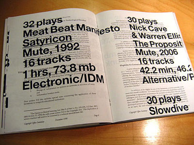
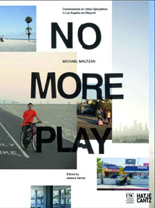
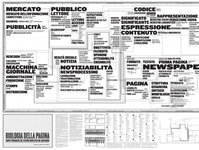
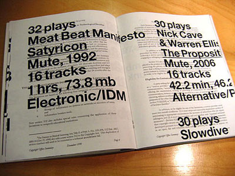
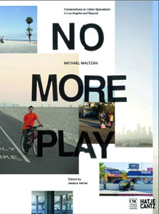
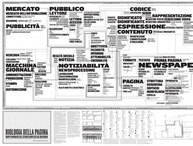

 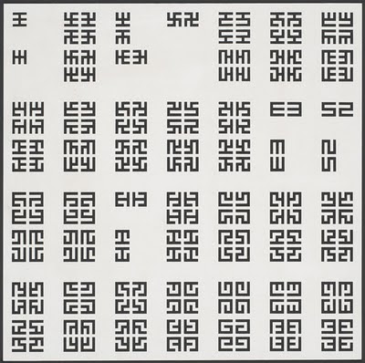
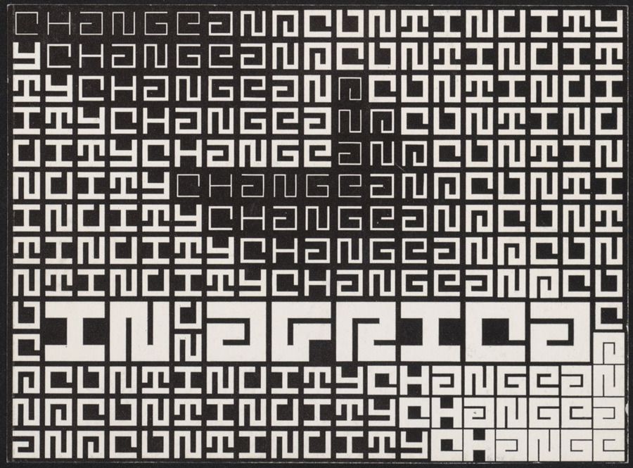
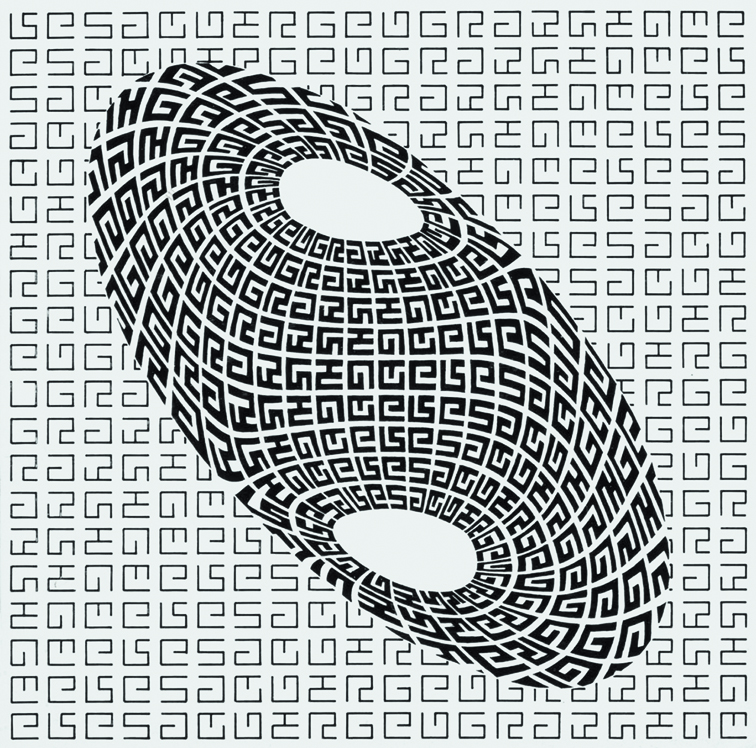
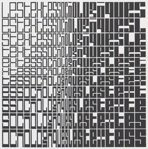
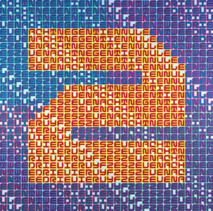
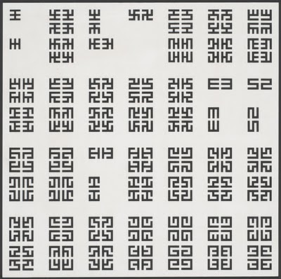
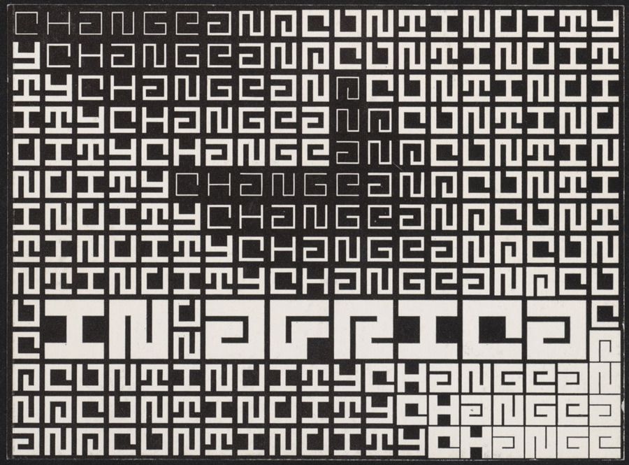
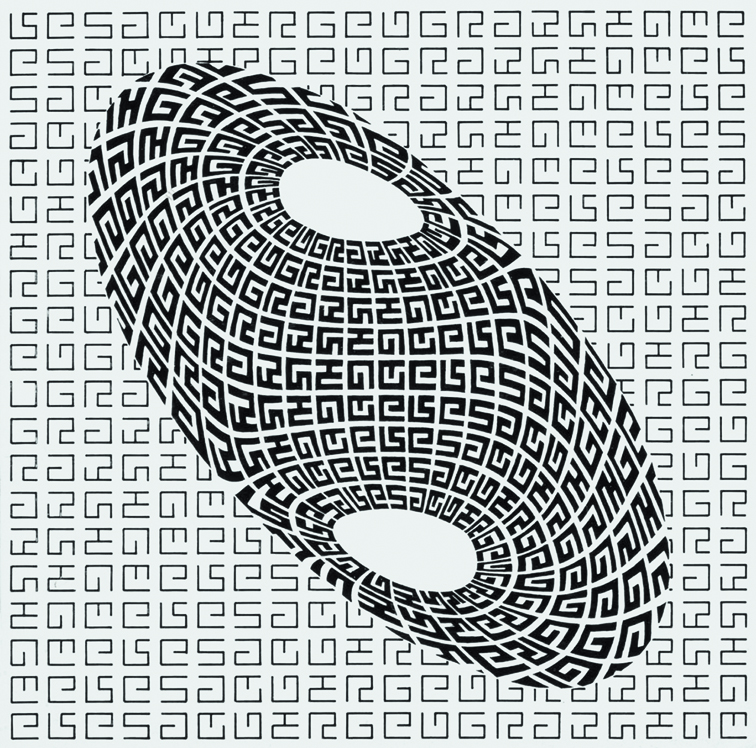
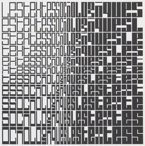
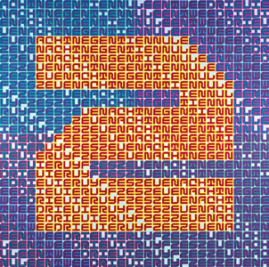
 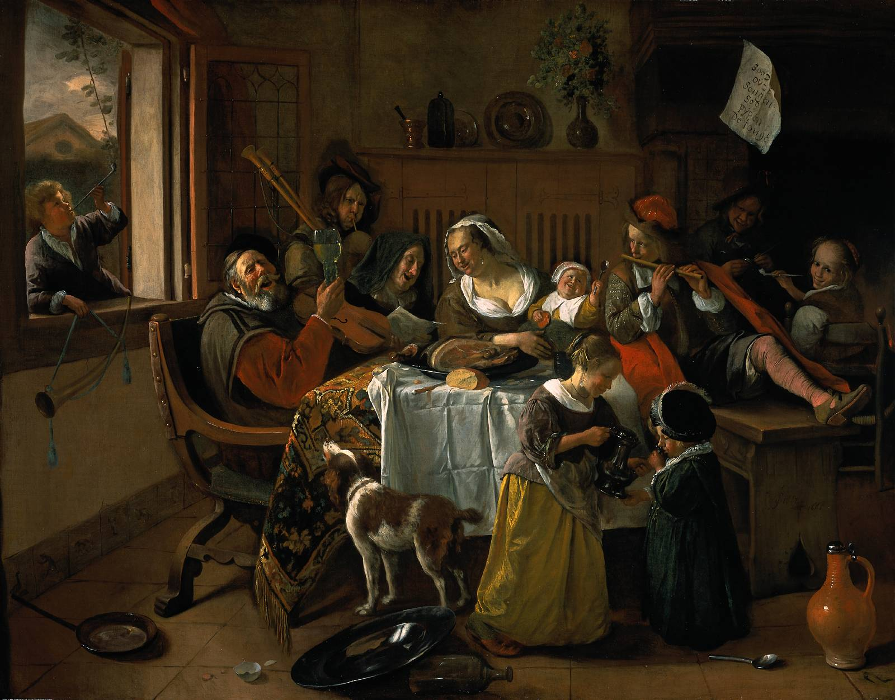
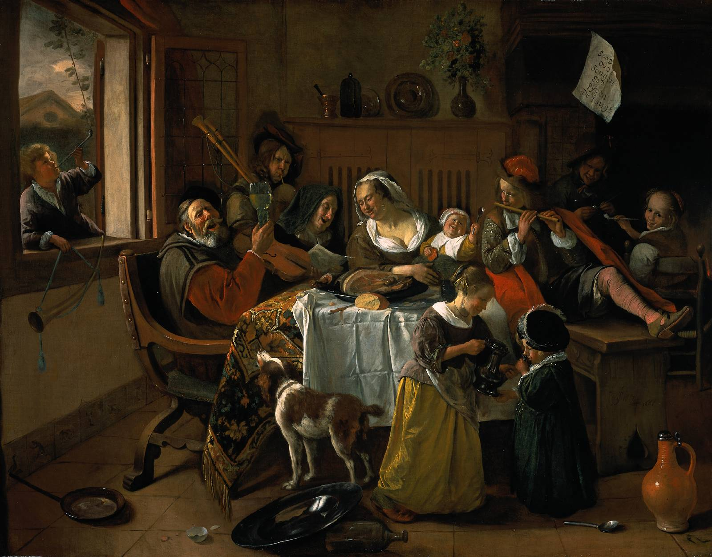
 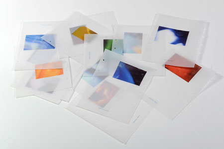
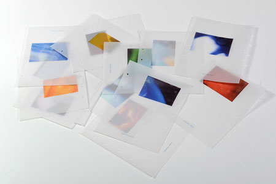
Démontable - trailer from Douwe Dijkstra on Vimeo.
Prime Time Paradise from Broersen&Lukács on Vimeo.